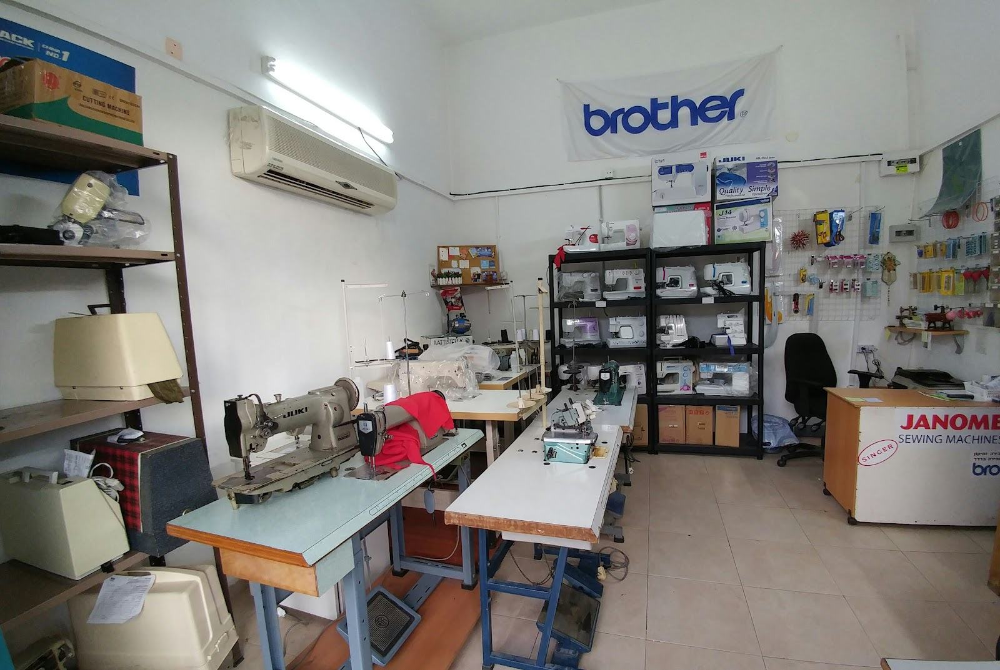
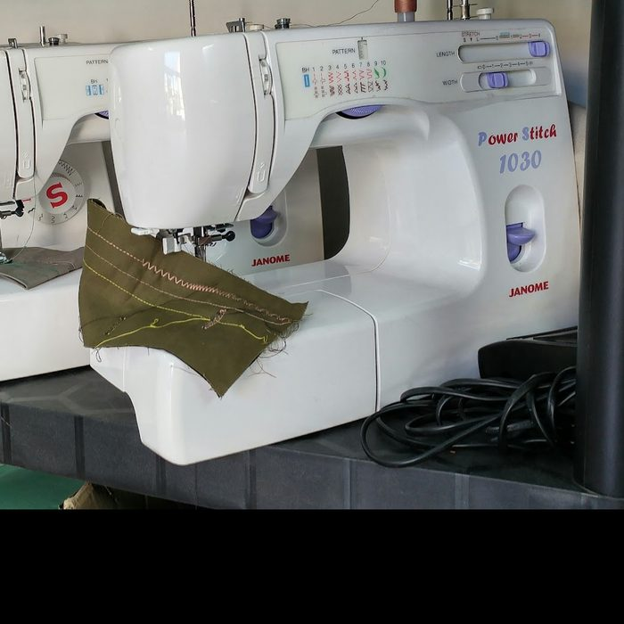
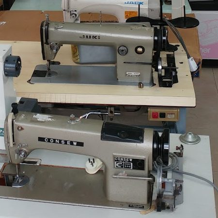
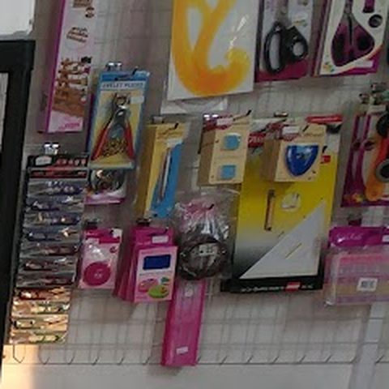
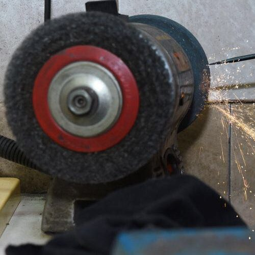
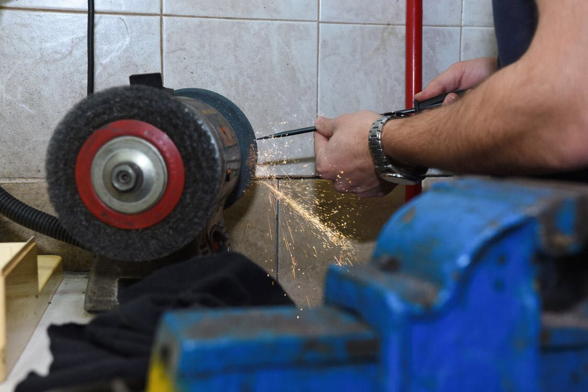
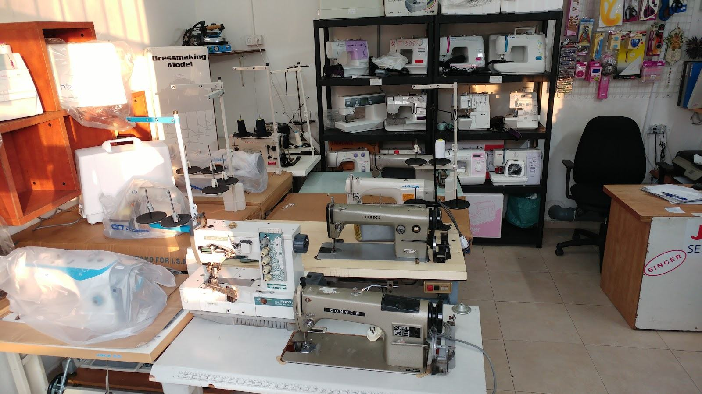
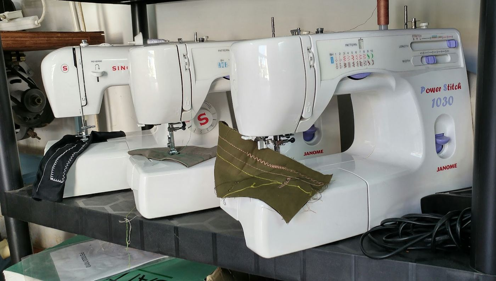
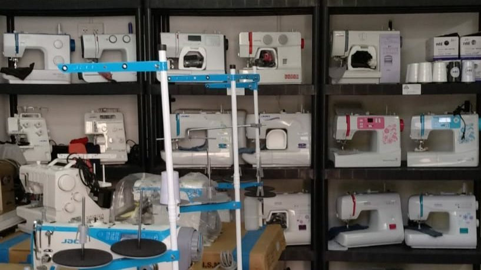
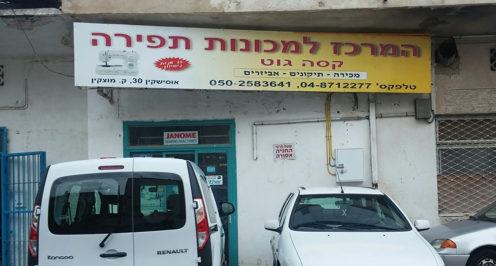

קסה גוטCasa Gut מכונות תפירה.Sewing machines.
המרכז למכונות תפירה בצפון קסה גוט: מכירה, תיקונים ואביזרים. אוסישקין 30, קריית מוצקין.Casa Gut, the Northern Sewing Machine Centre: sales, repairs and accessories. 30 Ussishkin St, Kiryat Motzkin.




על המדפיםOn the shelves
תמונות מהחנותPhotos from the shop

תיקונים, על שולחן העבודה.Repairs, on the workbench.
מכונות ביתיות ותעשייתיות מגיעות לחנות, ושם הן נפתחות, נבדקות ומטופלות.Home and industrial machines come into the shop, where they are opened up, checked and worked on.
תמונה מהחנות, מתוך תמונות העסק בגוגלA photo from the shop, from the business’s Google photos
חנות שלמה של מכונות.A whole shop of machines.


כתבו לקסה גוט.Write to Casa Gut.
- בוחרים את המכונהChoose the machine
- בוחרים מה צריךChoose what you need
- שולחים בוואטסאפSend it on WhatsApp
קסה גוט · מכונות תפירהCasa Gut · Sewing machines
אוסישקין 30 · קריית מוצקין30 Ussishkin · Kiryat Motzkin
4.7, מ-97 ביקורות.4.7, from 97 reviews.
Googleלכל הביקורותRead them allקסה הוא האיש הכי נחמד שיש, וגם הכי מקצועי והכי נעים… ובסבלנות הושיב אותי לשיעור מזורז, הסביר הכל, הרחיב על מה ששאלתי, הדגים ושוב הסביר… והוא גם מצחיק מאוד. תודה גדולה לך.
Kasa is the nicest man there is, and also the most professional and the most pleasant… patiently he sat me down for a quick lesson, explained everything, went into what I asked, showed me and explained again… and he’s very funny too. A big thank you.
יחס אדיב וסבלני במיוחד – בעל החנות הקדיש מזמנו להסביר לי בסבלנות ובבהירות איך להשתמש במכונת התפירה, וענה על כל השאלות שלי… יצאתי מהחנות מרוצה ושמחה.
Especially kind and patient – the shop owner took the time to explain, patiently and clearly, how to use the sewing machine, and answered all my questions… I left the shop pleased and happy.
הגענו עם מכונת תפירה לבדיקה ותיקון. התקבלנו בלבביות… הבעלים הוגנים והגונים. ממליץ למי שצריך שירות מקצועי אדיב, חביב והגון להגיע לקאסה גוט.
We came in with a sewing machine to be checked and repaired. We were warmly received… the owners are fair and decent. I recommend Casa Gut to anyone who needs professional, kind, friendly and honest service.
שירות מעולה, אדם ממש חם ונחמד, אוהב לעזור, ותמיד נמצא לשירותך.
Excellent service, a really warm and kind man who loves to help, and is always at your service.
שאלות, ותשובות.Questions, answered.
מה עושים בחנות?What does the shop do?
מכירה, תיקונים ואביזרים למכונות תפירה, כמו שכתוב על השלט.Sales, repairs and accessories for sewing machines, just as the sign says.
יש גם מכונות תעשייתיות?Are there industrial machines too?
כן. בתמונות מהחנות רואים מכונות תעשייתיות של Juki, Consew ו-Jack, לצד המכונות הביתיות.Yes. The shop’s photos show Juki, Consew and Jack industrial machines alongside the home machines.
אילו מותגים יש על המדפים?Which brands are on the shelves?
בתמונות מהחנות: Janome, Singer, Brother ו-Juki.In the shop’s photos: Janome, Singer, Brother and Juki.
מתי החנות פתוחה?When is the shop open?
בימים א׳, ב׳, ד׳ וה׳: 9:00–13:00 ו-16:00–19:00. בימים ג׳ ו-ו׳: 9:00–13:00. בשבת סגור.Sunday, Monday, Wednesday and Thursday: 9:00–13:00 and 16:00–19:00. Tuesday and Friday: 9:00–13:00. Closed on Saturday.

אוסישקין 30, קריית מוצקין.30 Ussishkin St, Kiryat Motzkin.
